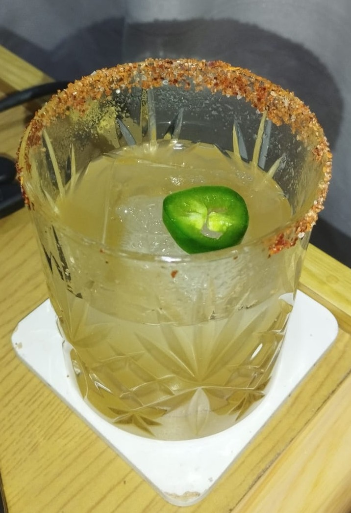

Spicy Margarita

Description
A mildly spicy, boozy and sweet twist on a classic.
Ingredients
- 2 oz. Jaral del Barrio mezcal
- ½ oz. Sisi orange liqueur
- ½ oz. Ancho Reyes chile ancho liqueur
- 1 oz. lime juice
- ½ oz. agave syrup
- 2 jalapeño slices
-
Garnish:
Steps
- Rim an old-fashioned glass with a mix of Tajín and salt.
-
Muddle the jalapeño slices with the lime juice and agave syrup in a
shaker.
-
Add mezcal, orange and chile ancho liquer to the shaker, shake with
cracked ice.
- Serve in glass over big ice cube, add jalapeño coin as garnish.
Home